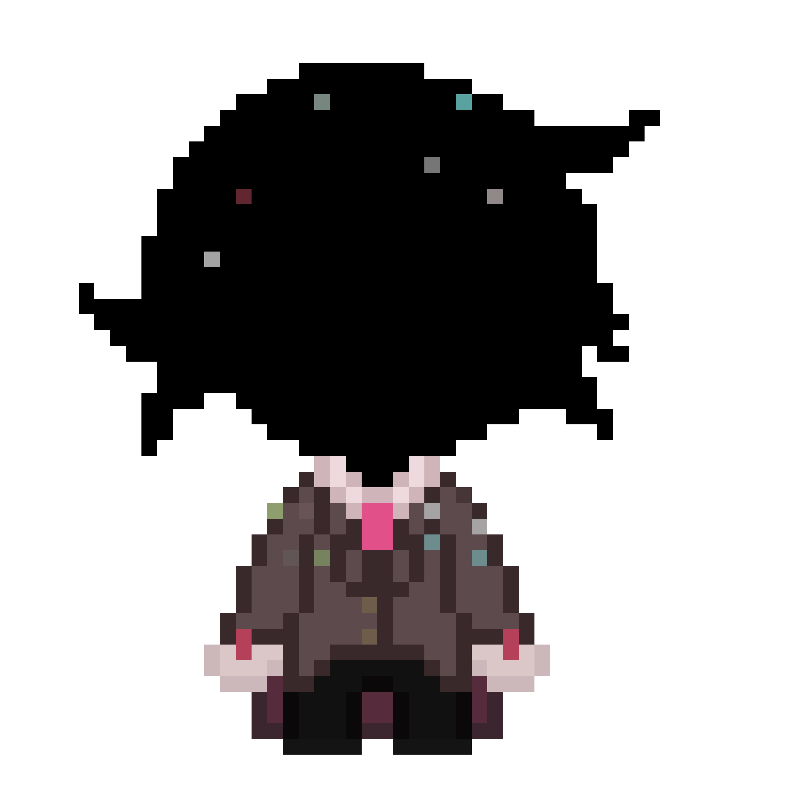
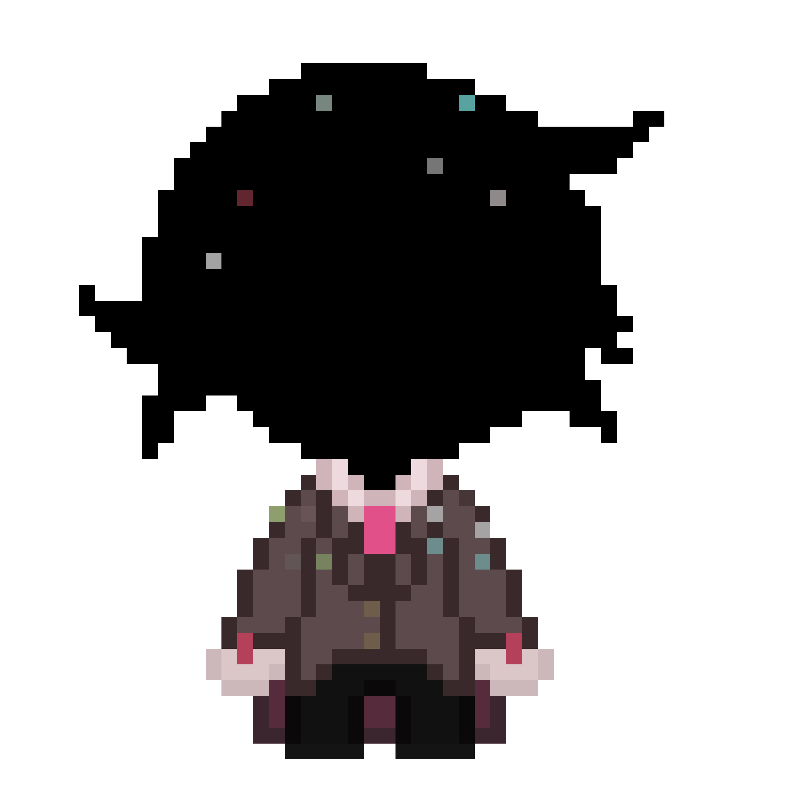
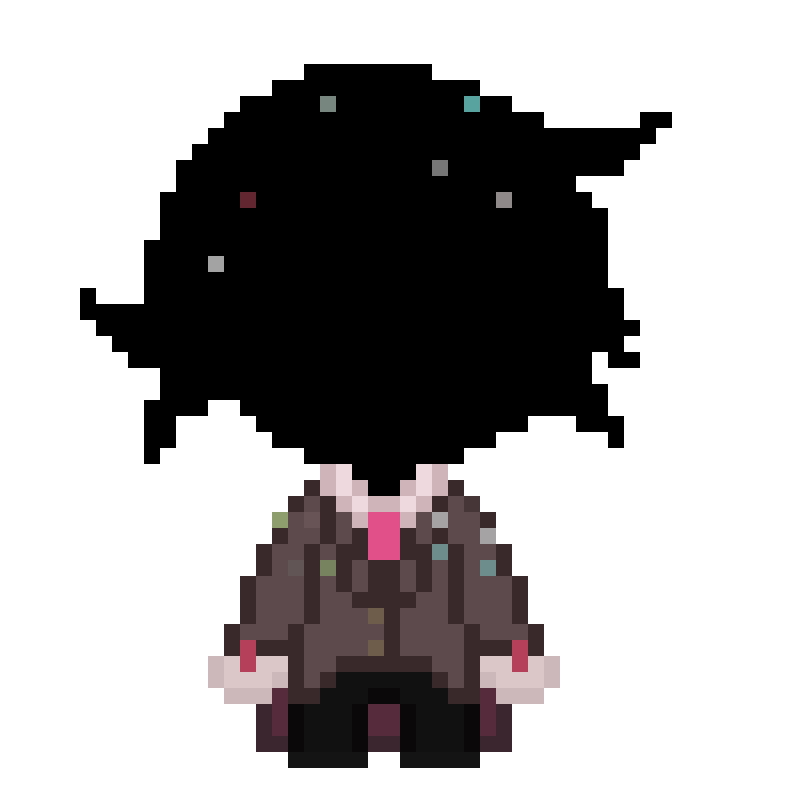

:/ДЕЛО 4

:/ДЕЛО 4

|
/
|
:/ДЕЛО 4

|
/
интересная копия, что состоит полностью из самой материи магии. вполне серьёзно. он имеет способность ходить по мирам с помощью своих фокусов, что затрачивают много сил, из-за чего он буквально может растекаться, что ощущается очень больно и неприятно. также он очень нервный, что чаще всего его и заставляет плавиться. он крайне эмоционален, дружелюбен и настолько искренний, что даже врать не умеет. по какой-то причине на него не распространяются правила как на других копий, о том что не стоит смотреть друг другу в глаза и т.д очень любопытный, крайне редко баловливый.
большинство копий появляются в мире уже с написанной историей и какими-то воспоминаниями, просто сразу вписанными в историю, как и этот. но для него первым НАСТОЯЩИМ воспоминанием было какое-то утро перед зеркалом. он заметил то, что он превратился в черное липкое нечто, хотя другие люди в его мире видели его так же, как раньше, человеком. как позже оказалось он стал почему-то куском магии. он долго осваивался и привыкал к новой жизни и однажды так проверив свои возможности, он открыл портал в неизвестность, далекую неизвестность. в коридор, в нигде. там 4 впервые совершенно случайно познакомился с нами. на данный момент он периодически посещает наш офис и иногда контактирует с копиями. к сожалению удержать его от общения с ними, мы не можем. личность он такая, что хочет общаться со всеми с кем может...
но с другой стороны, через него мы можем получать информацию о копиях более эффективно, чем мы и пользуемся
-он не знает почему, но он прекрасно сориентировался во времени и пространстве впервые попав за пределы мира, хотя в пространстве, что находятся в пустоте ему никогда не приходилось быть
-с ним невозможно НЕ найти общий язык!
-если вы думаете что 4 отреагирует эмоционально на что-то, лучше соврите, что бы тому не было плохо
- он неуязвим к практически любым физическим повреждениям, за то может взорваться буквально как хлопушка от стресса и восстановиться уже в своей комнате
- камеры, прослушка и тому подобное иногда очень удобно глушатся и перестают работать рядом с ним.
- в родном мире он подрабатывает фокусником.
-его главный страх это пустота. в пустоте живут действительно страшные существа
-в отличии от остальных копий, у него другое имя. его зовут Маджента
- несмотря на то что он очень общительный, он предпочитает сидеть дома и играть в игры. иногда возникает ощущение, что у него замедляется метаболизм и он перестает чувствовать другие потребности иначе не понятно как он может играть несколько дней подряд без перерывов на сон и еду во что-либо.